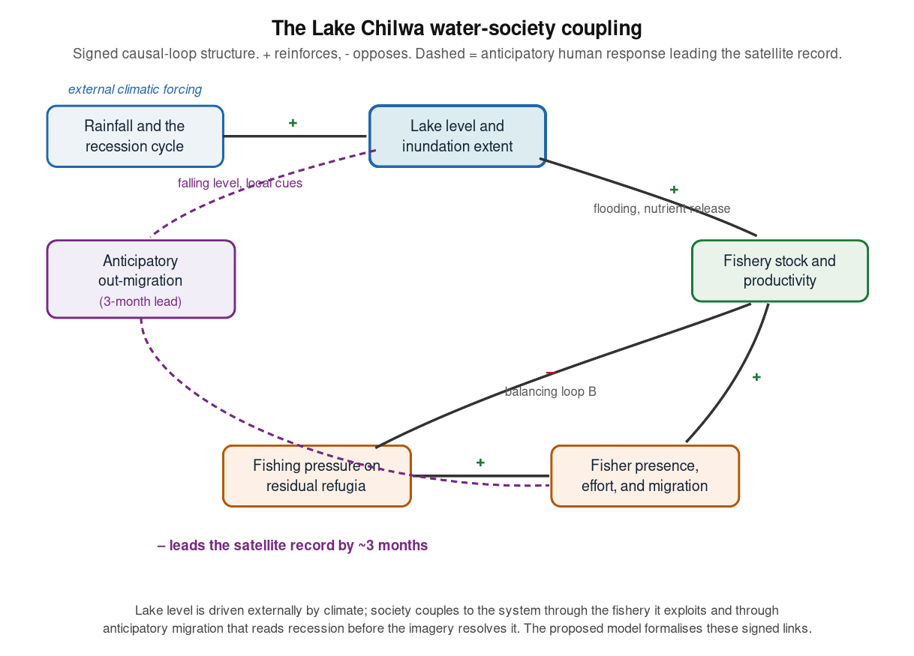

Discussion
Discussion
4.1 Detecting Flooded Vegetation
The contribution this study makes to the flooded-vegetation problem is a model built for the class rather than around it. Slagter et al. (2020) established the current standard of practice at a comparable southern African wetland by removing high-vegetated wetland from their classification, after finding that flooding beneath the vegetation could not be detected with Sentinel-1 in VV and VH; their headline accuracy is stated for that reduced problem. Peng et al. (2022) reached the same accommodation in the temporal domain, restricting analysis to the dry season when the vegetation stands exposed, and folding submerged plants into the water class because the two could not be separated. Both are reasonable responses to an intractable measurement, and both leave the hydrologically decisive quantity unmeasured.
What allows the class to be retained here is the training data rather than the sensors. Every remedy the reviews propose is instrumental, a longer wavelength or a different polarisation, and each shifts the saturation point without removing it. None addresses the deeper problem, which is that inundation beneath the vegetation cannot be labelled from above at any resolution, so a reference set built by image interpretation cannot teach a model to recognise it. Fisher knowledge can, because fishers work the marsh interior through the recession cycle and observe standing water beneath the reeds directly. Woodward et al. (2021) established the precedent for treating participatory data as the response variable rather than as a check on a satellite product, finding in a transboundary southern African landscape that the contribution of Landsat spectra to their resource-use model was negligible beside it. Our use is narrower and more specific: participatory observation supplies the one label that no sensor and no interpreter can supply, and the optical, radar, and sub-pixel layers then generalise it across four decades.
Retention is vindicated by what the two components of the footprint do. Open water and emergent vegetated water are anti-correlated across the record, so the wetland compensates as the lake recedes and the combined footprint is steadier than open water alone. A record confined to open water therefore reports the recession as a loss of wetland when the wetland has reorganised, exactly the misreading that Oakes et al. (2023) anticipated in the Barotseland Floodplain, where inundated vegetation accounted for a mean 80 per cent of wet-season inundation and where they concluded that any method resting on C-band backscatter, theirs included, must underestimate inundated extent. For an endorheic basin whose fishery depends on the Typha refugia that persist through recession, the distinction between a lake that has dried and a wetland that has shifted state is not academic.
The residual limitation is honest and unresolved. Detection beneath vegetation remains conditional on standing biomass, and Tsyganskaya et al. (2018) show that double-bounce return saturates as biomass rises, so a dense Typha stand at peak growth can conceal water that the same stand reveals earlier in the season. The size of that residual is measurable and large. Hardy et al. (2019), on the herbaceous floodplain from which the 70 per cent vegetated-water share above is drawn, found that in a peak-flood scene “almost 70% of points lying on vegetated water bodies were not identified by the classification routine, due to the saturation of the backscatter signal over relatively dense canopies,” and concluded that their scheme “is only applicable for vegetated water bodies with vegetation cover below a particular level.” Our C-band component is subject to the same ceiling, and at the seasonal maximum, when the Typha stand is densest and the inundated area greatest, it is least reliable. Battaglia and Bourgeau-Chavez (2025) demonstrate how instrument-dependent the resulting number is, measuring flooded-vegetation extent over one delta that varied by 22 per cent across three radar wavelengths on the same scene. Our L-band record is annual and coarse and does not span the full Landsat series, so the evidence for water beneath the vegetation is strongest for the years the mosaic covers and weakest elsewhere. What the study can claim is a measured lower bound on inundated extent and a demonstration that the vegetated component is large enough to change the hydrological interpretation. What it cannot claim is a resolved detection method, and the reviews are unanimous that none yet exists.
4.1.1 Sensor Complementarity
The multi-sensor approach confirmed the complementarity of optical and SAR methods while exposing the limits of each. Optical indices performed within the bounds predicted by the comparative literature (Fisher et al., 2016; Mahdavi et al., 2018), with MNDWI producing the strongest single-index classification and NDPI proving most sensitive to the vegetated pond margins that other indices missed. The 25 to 40% underestimation of inundation in Typha marshes by all optical indices is consistent with Ozesmi and Bauer’s (2002) observation that vegetation reflectance dominates the spectral signal in emergent wetlands, and with Amani et al.’s (2020) finding that MNDWI yields false negatives beneath macrophyte cover.
SAR addressed these failures directly. Sentinel-1 backscatter analysis provided continuous wet-season monitoring when 60 to 75% of optical acquisitions were lost to cloud, confirming Mahdavi et al.’s (2018) argument for SAR as the primary sensor in tropical wetland environments. The double-bounce signal detected inundation beneath the vegetation that no optical index could resolve. The gradient analysis, adapted from sea ice monitoring, proved effective for tracking the recession-refilling wavefront across flat terrain, an application not previously demonstrated for endorheic lake systems.
The C-band limitation in dense Typha (producer’s accuracy 0.71 in the marsh interior) confirms Clement et al.’s (2018) findings at St. Lucia and Hess et al.’s (2003) demonstration that L-band penetrates emergent vegetation far more effectively. For Lake Chilwa, where Typha domingensis marshes constitute the principal refugium during recession and the first habitat to refill, this limitation matters. We therefore incorporate ALOS PALSAR L-band for the years the mosaic spans, 2007 to 2010 and 2015 to 2020, whose longer wavelength penetrates the vegetation and whose double-bounce return marks the standing water beneath it, though at coarser resolution and only annual frequency; the forthcoming NISAR mission would extend this to a continuous, higher-frequency L-band record.
Neither sensor family, however, captures the social structures that determine how the lake’s resources are used, contested, and governed. Remote sensing monitors biophysical change but is structurally silent on tenure, access, and livelihood (Woodward et al., 2021). The enforcement conflicts, territorial negotiations, and anticipatory migration patterns documented through our ethnographic fieldwork are invisible to any satellite. This structural limitation is widely acknowledged (Yiran et al., 2012; Demichelis et al., 2023) but rarely addressed through sustained integration of remote sensing with ethnographic methods.
4.2 Integration Gap
The literature on combining remote sensing with participatory or ethnographic methods for wetland management is sparse. Del Rio et al. (2018) achieved 81% classification accuracy by grounding Landsat-derived classes in Lozi ecological knowledge on the Barotse Floodplain, but relied on focus groups rather than extended fieldwork. Yiran et al. (2012) synthesised remote sensing and local knowledge for land degradation assessment in Ghana but did not attempt multi-temporal analysis. Demichelis et al. (2023) combined remote sensing with local knowledge at the Bas-Ogooue Ramsar site in Gabon, demonstrating that local observers detect early degradation before it becomes spectrally visible. These studies share a common limitation: the social data were collected over days or weeks through structured exercises, not through the sustained ethnographic engagement that reveals the deeper structures of resource governance. The gap is closing fastest where optical and radar are fused and then reconciled against participatory ground data: Lateef et al. (2025) combined Sentinel-1, Sentinel-2, and PlanetScope in Google Earth Engine to map flood extent and crop recovery in northern Nigeria, exceeding 90% accuracy and reaching 91% agreement with farmers reporting total loss, with SAR compensating for the cloud cover that defeats optical sensors during floods. This is the closest methodological precedent to the present pipeline, though it holds participatory data in a validating rather than a generative role.
Our study occupies a different position. Eighteen months of fieldwork across three districts, spanning two dry seasons and a complete wet season, produced data that no rapid appraisal could yield. The identification of 23 enforcement conflict sites, the documentation of selective compliance based on kinship and patron-client relationships, and the mapping of anticipatory migration pathways all required extended immersion in fishing communities. These findings validate Njaya’s (2009) analysis of power asymmetries in Lake Chilwa co-management and extend it spatially, showing where those asymmetries produce observable conflicts on the ground.
No published study integrates remote sensing of Lake Chilwa’s inundation dynamics with participatory or ethnographic data from its fishing communities. Comparable endorheic systems in the Rift Valley, including Lakes Turkana, Rukwa, and Bangweulu, face similar gaps. The absence is not accidental. Remote sensing studies and ethnographic studies are published in different journals, reviewed by different communities, and funded through different mechanisms. Bridging them requires both technical competence in satellite data processing and the sustained fieldwork relationships that produce reliable social data.
4.3 Recession Migration Dynamics
The correspondence between water extent and population movement across the basin over three decades constitutes the study’s central empirical finding, and it is socio-hydrological in the strict sense: lake recession drives fisher migration, and fishing effort in turn shapes the pressure on the resource and the human geography of the shoreline, pointing to a two-way coupling in which water and society co-evolve rather than one merely forcing the other (Srinivasan et al., 2017). The three-month anticipatory lag is the signature of human agency in that coupling, since fishers act on their own reading of recession before the satellite record resolves it, so their expectation and memory operate as internal states of the system rather than as noise around a physical signal, much as risk awareness and memory are treated as societal state variables in socio-hydrological flood models (Albertini et al., 2020). The pattern, in-migration during refilling, out-migration preceding recession, with a consistent 3-month anticipatory lag, aligns with Sarch and Allison’s (2000) observation that communities around Africa’s shallow lakes are well adapted to cyclical fluctuation but that this adaptation operates through social networks and environmental knowledge systems rather than through formal monitoring. Critically, the Environmental Affairs Department’s characterisation of “ignorance, poverty, corruption, migratory fishermen and lack of resources” as the principal barriers to sustainable fisheries (EAD, 2000) misreads migration as a problem. Migration is the primary adaptive strategy in a fluctuating ecology (Allison and Mvula, 2002; Murphy, 2014). The remote sensing data confirm this: population movement tracks the water with precision that formal monitoring has never achieved.
The anticipatory lag deserves particular attention. Communities did not wait for official warnings or for the lake to dry. They read environmental signals and acted on them months before the same changes registered in satellite imagery. Jamu et al. (2003) documented the social networks activated during Lake Chilwa recessions, showing how kinship ties to communities outside the basin facilitate orderly out-migration. The matrilineal kinship system provides the institutional scaffold for this mobility: male fishers move as affinal husbands (mkamwini) between their wives’ villages and the lake, and these uxorilocal ties to multiple localities sustain the social networks through which migration is organised (Murphy, 2014). Our spatial data add a dimension this earlier work lacked: the wavefront pattern of sequential camp abandonment from north to south during recession, and the mirror pattern of south-to-north recolonisation during refilling, tracked through both SAR gradient analysis and community accounts. Wilson’s (2014) historical level chronology provides the long-term context: the geological record shows that Lake Chilwa has oscillated between pluvial highs (up to 36 m above current average during major glaciations) and prolonged dry phases for at least 450,000 years. The current recession-refilling cycles are the latest expression of a fundamental instability, and the fisher migration patterns documented here are adaptive responses to a phenomenon far older than the communities themselves.
This finding has implications beyond Lake Chilwa. Kolding and van Zwieten (2012) show that system productivity in African lakes increases with water-level instability, and that dryland fisheries are dominated by small, opportunistic species adapted to strong environmental disturbance. Lake Chilwa’s three commercial species exemplify this: highly fecund, early-maturing, tolerant to wide environmental variation, with unspecialised spawning and broad diets (Njaya, 2001). The dominant fisheries paradigm of optimal sustainable yields does not apply to such systems, where productivity is intrinsically unstable and the most effective strategies may be “opportunistic and ‘unstable’ in the conventional sense” (Sarch and Allison, 2000). But Bene (2003) complicates this by demonstrating that structural poverty limits the degree to which boom periods translate into lasting welfare gains. The boom-and-bust cycle is ecologically productive but socially precarious. Communities that survive recession through anticipatory migration return to a fishery that recovers rapidly but whose benefits are captured unevenly, as Njaya, Donda, and Bene (2012) document through their analysis of power in Lake Chilwa’s co-management structures.
4.4 Governance & Monitoring Constraints
The enforcement mapping revealed a fishery governed less by the jurisdictional boundaries on official maps than by a layered system of traditional territorial claims and kinship obligation, what Wilson, Russell, and Dobson (2008) call a patchwork of traditional, modern, and post-modern regimes. The post-1995 co-management structure, six Fisheries Associations and Beach Village Committees aligned to the jurisdictions of group village headmen (Wilson, 2009), grafted a participatory mandate onto that existing authority and so placed enforcement with traditional leaders rather than working fishers (Murphy, 2014; Njaya, 2009). Migrant fishers complied selectively, observing rules enforced by authorities with whom they held established ties and disregarding those imposed by officers outside their home territory. This selective compliance, invisible to any system that tracks only catch volume or vessel position, determined conservation outcomes more directly than any formal mechanism, and it was legible only through extended fieldwork.
The spatial correlation between the rate of shoreline retreat and the intensity of conflict points to the coupling mechanism: rapid environmental change compresses the resource base and forces competing users into overlapping territories, escalating disputes that stable conditions would not produce. The institutions did not collapse; their spatial jurisdiction ceased to match the shifting distribution of the resource, opening governance gaps that remote sensing cannot detect but participatory mapping can. The precedent from nearby Lake Chiutha, where resident fishers expelled migrant seine-net crews and burned their camps after the 1992-95 recession (Murphy, 2014; Wilson, 2009), shows what follows when those gaps are closed by force rather than institutional adaptation.
4.5 Integrating Participatory Data
The integration attempted here is best understood not as a marriage of two disciplines but as an extension of a single method. Remote sensing already rests on the principle that heterogeneous, complementary sources outperform any one source in difficult terrain, because each measures a dimension the others cannot: optical reflectance, radar structure, terrain form (Amoakoh et al., 2021; Hestir and Dronova, 2023). Turbid, vegetated, cloud-covered, access-limited water bodies are the archetypal case for this logic, demanding a coordinated portfolio of modalities rather than the pursuit of a single best sensor (Hestir and Dronova, 2023). Our results bear this out at every boundary: MNDWI where NDWI fails, SAR where optics fail, and, in the dense Typha interior, a residual gap that neither optical nor C-band radar can close. Participatory data enters the paradigm at exactly this point, as the source that reaches the blind spot the satellite stack leaves. Fishers’ knowledge of where water persists beneath the vegetation, and of how the inundation boundary moves through the cycle, is not softer evidence than a backscatter threshold; it is evidence of a different kind, targeting the failure mode the sensors share. In socially mediated landscapes the strongest predictors are often not spectral at all: Woodward et al. (2021) found that population-proxy covariates of proximity and accessibility drove classification accuracy above 90% while Landsat indices added almost nothing, a result that recommends treating distance, mobility, and access as first-class variables rather than nuisance corrections, and that dovetails with reading the recession-migration coupling as a problem of access to a moving resource.
The test is complementarity, not accumulation. Amoakoh et al. (2021) show that adding sources raises accuracy only when each contributes non-redundant information, and that a correlated feature can degrade a classifier. Participatory data passes this test on its own terms. It supplies the demand placed on the wetland, the causation behind observed change, and the relational and cultural features that have no spectral signature, none of which any sensor records (Hodbod et al., 2019). It also corrects interpretation: Hodbod et al. (2019) found that community input reweighted land covers the classifier had misjudged and explained changes it could only flag, warning that without local context researchers may misread or miss what the imagery shows. Our three-month anticipatory lag is the same correction in temporal form. The community reads the recession before the satellite resolves it, so local observation functions here as a leading indicator rather than as validation after the fact.
This framing does not dissolve the difficulties, and honesty about them is part of the argument. Participatory data is costlier per unit area, harder to reproduce, and harder to validate against an accuracy matrix than a satellite product (Hodbod et al., 2019); the appropriate response is triangulation, in which the two sources cross-check each other rather than one certifying the other. Elicitation resists standardisation, and knowledge that maps at very fine or very broad extents strains any raster schema. The integration also carries an ethical charge, since overlaying an expert technology on local knowledge can delegitimise the very knowledge it claims to include (Hodbod et al., 2019). The corrective is co-production: local observation admitted with equal weight, not demoted to ground truth for a classification it did not shape. Treated this way, participatory mapping is neither a supplement nor a courtesy to the communities studied. It is a data source that the mapping of a lake like Chilwa cannot do without.
4.6 Coupled Socio-Hydrological Models
The mapping and ethnography reported here establish the coupling; the next step is to model it. Socio-hydrology offers two complementary vehicles. A system-dynamics representation would cast lake level, fishing effort, and migration as a small set of coupled relations, in the manner of the compact human-water models that reproduce emergent behaviour from a handful of proxy variables (Blair and Buytaert, 2016; Albertini et al., 2020). An agent-based representation would instead model heterogeneous fishers deciding when and where to move, recovering the anticipatory lag as an emergent property of individual decision rules rather than imposing it, and yielding spatially explicit output that joins directly to the inundation maps (Blair and Buytaert, 2016). The precedent for coupling such a behavioural model to a physical hydrological model and reading consequences off ecological indicators is well established (Wu et al., 2015).

The data such a model needs are largely those this study assembles. The lake state enters as the multi-decadal optical and SAR inundation series; the social state, as the migration typology, camp populations, and the sequential abandonment and recolonisation recorded in the ethnography; and the coupling itself is already quantified by the three-month lead and the migration-inundation correlation, which give the model two of its parameters directly. Three inputs remain to be assembled. A rainfall or lake-level forcing series, built from the Malawi precipitation records and the Wilson (2014) level chronology, is needed to drive the lake exogenously under scenarios; where the gauge record is thin, modelled inflows offer a continuous alternative, since global reach-scale reconstructions now cover the basin’s tributaries daily from 1980 to 2020 (Lin et al., 2019; Ji et al., 2025). Those inflows are naturalised, carrying neither abstraction nor lake evaporation nor wetland storage, so they can force such a model but cannot stand in for a water balance. A fishery stock or catch series, however sparse, is needed to anchor the productivity term, which the literature reports only as episodic peak yields. And the behavioural rules that the ethnography describes qualitatively, the thresholds and cues on which fishers act, must be elicited or assumed and then tested. The model should reproduce, at a minimum, the observed lead, the water-population correlation, and the spatial wavefront of movement, which are the study’s own findings and so form its natural validation set.
The purpose of such a model is not to forecast the lake’s level, which adaptive human response and climatic variability place beyond reach, but to project the alternative co-evolving trajectories of the lake-fishery system and so map its possibility space, its path dependence, and its thresholds (Srinivasan et al., 2017). Scenario development supplies the method: recession-refilling regimes under climate and abstraction change, crossed with fishery-governance and livelihood choices, define a scenario set against which management options can be tested (Dong and van de Giesen, 2011; Wu et al., 2015). This matters beyond description, because human-water feedbacks routinely defeat interventions that treat water as a fixed backdrop, so anticipating the recession-migration feedback is a precondition for effective fishery management and for the food-security and climate-adaptation goals on which the basin’s livelihoods depend (Di Baldassarre et al., 2019; Xia et al., 2022).
We hold this ambition honestly. Building, calibrating, and validating such a model remains future work, and socio-hydrological models of this kind function as structured hypotheses about a system rather than as validated forecasts (Blair and Buytaert, 2016). The obstacles are real: human variables are uncertain, data to calibrate the coupling are scarce, the fast social and slow environmental timescales are difficult to reconcile, and the very time lag documented here can conceal the underlying dynamics (Xia et al., 2022). The multi-source inundation record and the participatory data assembled in this study are what make the attempt tractable.
Future Research
Two methodological challenges shaped the study’s design and merit explicit discussion. The first was temporal mismatch between satellite and ethnographic data. Landsat revisits the basin every 16 days; community observations are continuous. Aggregating satellite data into seasonal composites preserved compatibility with the temporal grain of ethnographic accounts but sacrificed the ability to detect rapid inundation events lasting less than two weeks. SAR’s 6 to 12 day revisit partially addressed this gap, but the temporal resolution of community observation still exceeded what any satellite provides.
The second challenge was spatial mismatch. Thirty-metre Landsat pixels cannot capture the spatial detail of fishers’ knowledge: specific fishing grounds, micro-habitats within the Typha marsh, seasonal access routes through shallow channels. Spectral mixture analysis improved sub-pixel discrimination, and community validation identified where the classifier failed, but the fundamental mismatch between satellite resolution and local spatial knowledge remains unresolved. Sentinel-2 (10 m) and high-resolution commercial imagery would improve spatial detail, but at the cost of temporal depth: no high-resolution archive extends back to the 1980s recession events this study sought to capture.
Four extensions would strengthen the framework developed here. First, the ALOS PALSAR L-band layer incorporated here addresses detection of flooding beneath vegetation beneath dense Typha stands for the years it spans; a continuous, higher-frequency L-band record from ALOS-2 or the forthcoming NISAR mission would close the gap across the full time series. Second, extending the Landsat time series backward using earlier sensors (Landsat 3 and 4) would, where data quality permits, capture a third recession cycle and strengthen the statistical basis for recession-migration correlation. Third, Google Earth Engine offers a practical pipeline for scaling the SAR backscatter analysis across the full Sentinel-1 archive, with export to SNAP for any interferometric processing. Fourth, the methodology should be tested at comparable endorheic systems: Lakes Turkana, Bangweulu, and Rukwa present analogous challenges and would test whether the integration framework transfers across different governance contexts and ecological conditions.
The most significant future direction is conceptual rather than technical. The 3-month anticipatory lag between community-detected and satellite-detected recession is a finding that inverts the usual relationship between remote sensing and ground truth. In this case, the ground truth precedes the satellite data. Designing monitoring systems that incorporate community environmental observation as a leading indicator, rather than treating it solely as validation for satellite-derived products, would represent a genuine advance in wetland conservation monitoring.